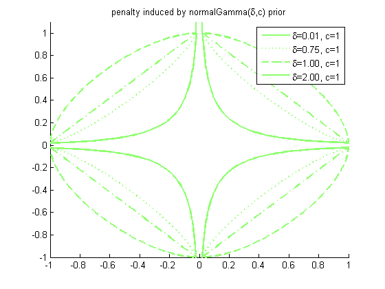
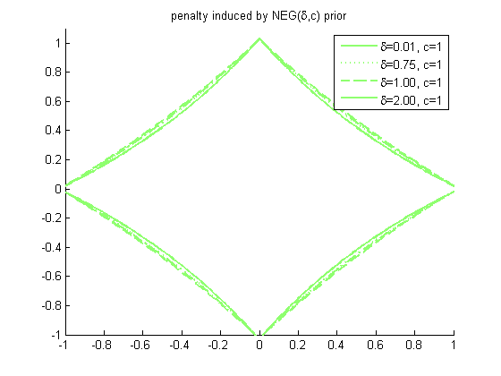

Plot contours of penalty(w1) + penalty(w2), where penalty(w) = -log p(w)
and p(w) = normalGamma(w | delta, c) PMTKauthor Francois Caron PMTKmodified Kevin Murphy
function normalGammaPenaltyPlotDemo() c = 1; pas=.02; [X,Y]=meshgrid(-1:pas:1,-1:pas:1.1); [styles, colors, symbols] = plotColors; %#ok deltas = [0.01 0.75 1 2]; if 1 figure; hold on for i=1:length(deltas) delta = deltas(i); pen = @(X) normalGammaNeglogpdf(X, delta, c); Z=pen(X(:)) + pen(Y(:)) - pen(1) - pen(pas); contour(X,Y,reshape(Z, size(X)),[0 0], styles{i}, 'linewidth', 2); str{i} = sprintf('%s=%3.2f, c=1', '\delta', delta); end legend(str) title(sprintf('penalty induced by normalGamma(%s,c) prior', '\delta')) printPmtkFigure('normalGammaPenalty') end if 1 % too slow! figure; hold on for i=1:length(deltas) delta = deltas(i); pen = @(X) normalExpGammaNeglogpdf(X, delta, c); Z=pen(X) + pen(Y) - pen(1) - pen(pas); contour(X,Y,Z,[0,0], styles{i}, 'linewidth', 2); str{i} = sprintf('%s=%3.2f, c=1', '\delta', delta); end legend(str) title(sprintf('penalty induced by NEG(%s,c) prior', '\delta')) printPmtkFigure('NEGPenalty') end end 